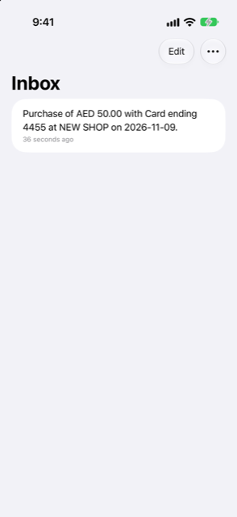

Guide › Recording money
The inbox
Where anything unclear waits for one tap from you.
The inbox holds bank messages Damla did not act on by itself - because they were unclear, or because acting would commit future money. Nothing from the inbox enters your books until you tap; each item is a short review.

When to use it
- Today shows N waiting for your OK.
- A payment you expected has not appeared in Activity.
- An alert mentioned a card or account Damla does not know yet.
Step by step
- Open Today and tap N waiting for your OK.
- Tap an item. It opens in the normal Add screen with the message already read.
- Check what Damla found under Check and save. If something is missing, tap Complete it and fill the rest in the form.
- Tap Save. The item leaves the Inbox once you save it.
- To discard an item instead, tap it and then Discard.
- To remove several at once, tap Edit in the list and delete them.
A statement notice does not offer you a transaction to save: tap Review the statement to open the statement review. Apply it and it leaves the Inbox.
Why a message is waiting
- An instalment plan: it commits future money, so it needs your OK.
- A card payment: the message does not say which account paid it.
- Digits that match no account yet: complete it once and Damla learns those digits for good.
- A purchase in a currency Damla has no exchange rate for yet: it asks what the card was billed.
- A possible duplicate of a payment added a moment ago: discard it if it is the same purchase.
- A message that could not be read as a bank alert at all.
- A statement notice, which is about the card's bill, not a purchase.
Good to know
- The same message delivered twice - a Shortcut that fired twice, a forwarded copy - waits once, not twice.
- A one-time code is dropped and never kept.
- A message that is not about money at all is not kept and not listed, so a private message never lands in the inbox.
- An alert that arrives while the phone is locked waits on the phone and is added the next time you open and unlock the app.
- A transaction you save from the inbox is kept as having come from a bank alert, so it shows in Activity like any other alert-added one.
Recent alerts
Recent alerts, in Settings, is a log of the last 50 alerts, newest first. Each has a short reason: added, waiting in the Inbox (and why), already recorded, ignored, or noted (a bill coming). Use it to check that your automation runs, and to see why a message went where it did.
Related
- Paste or share a message
- How automatic capture works
- What Damla ignores, and undoing an alert
- Credit cards
Something unclear or missing? Write to support@raveniq.ai and say which page.